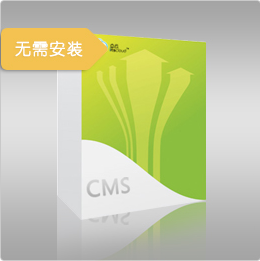

售后服务
-

- 客户日常使用方面
- 提供7*10小时
客户热线：
0755-29558715 -

- 系统运维方面
- 提供电信级的数据中心及系统运维安全保障，有专业的运维团队人员。
-

- 数据安全方面
- 提供日常备份管理；支持按权限导出数据功能
我公司（CMS内容管理系统）是国内java优秀CMS行业中知名度高、用户量大的管理系统。
采用轻量级技术架构,基于java技术开发，继承其强大、稳定、安全、高效、跨平台等多方面的优点，支持mysql、oracle、sqlserver等数据库
懂html就能建站，提供最便利、合理的使用方式
强大、灵活的标签，用户自定义显示内容和显示方式
在设计上自身预先做了搜索引擎优化,增强对搜索引擎的友好性
完全生成全站静态页面,可自定义路径结构，全面提高页面访问速度
轻松建设大规模网站，可通过次级域名建立子站群，各子站后台管理权限分离，全站实现单点登录
模块功能如下：
内容采编模块
位于世界各地的内容采编人员均可以通过基于Web界面的内容采编子系统，将他们收集到的内容录入到系统中。
支持多种创伤模式。支持与Word、Excel等常用软件集成，内容编辑人员可以自由按自己的工作习惯输入。
内容采编除支持多媒体元素的使用外，还可以支持文章分页、相关文章整理等。
在内容采编系统中采编的文章，通过编辑审批后，就可以自动发布到网站上去了。之后的操作由系统全部自动完成。
文件管理模块
文件管理模块为网站的管理人员提供了一个类似Windows Explorer界面的文件管理器，允许管理员像管理Windows的文件一样管理网站中的所有文件，包括图片文件、包含文件等。文件管理模块还提供文件锁定等操作，以便支持多个管理员同时对网站中的文件进行管理。